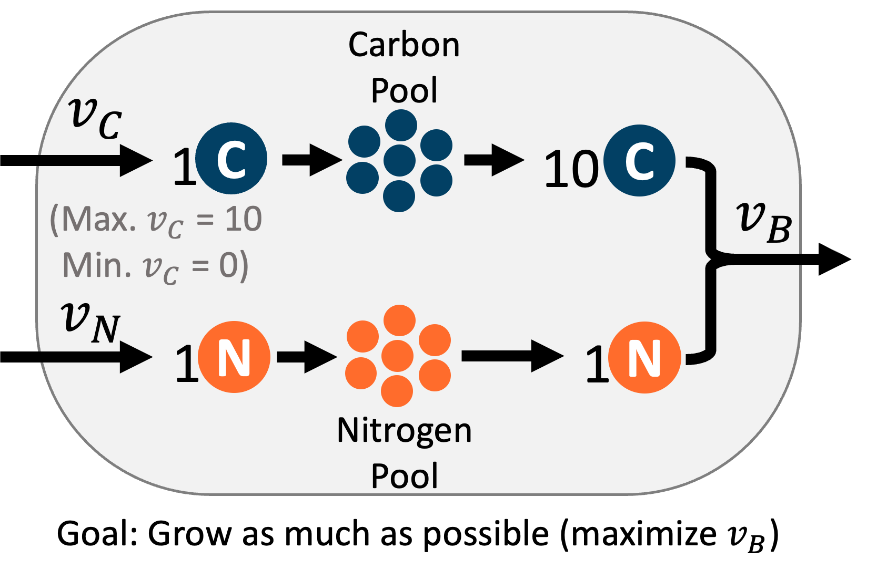
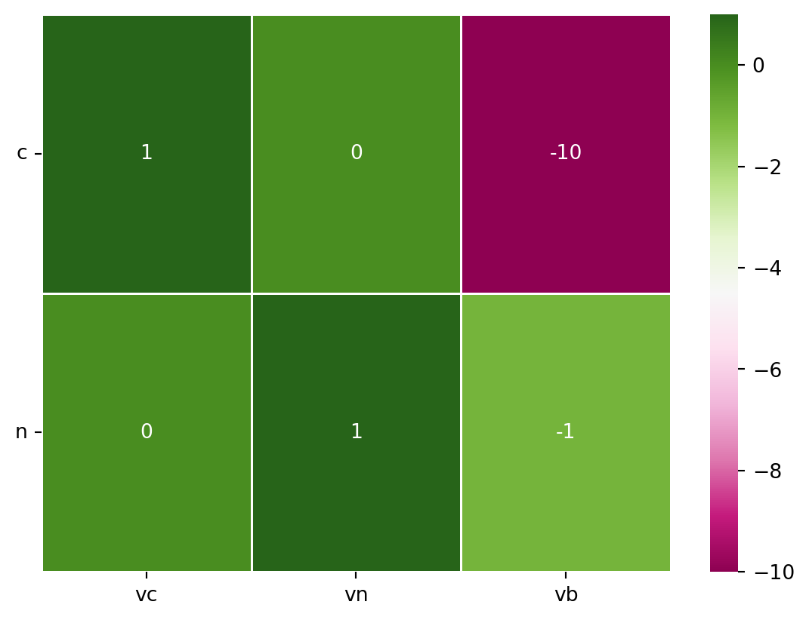
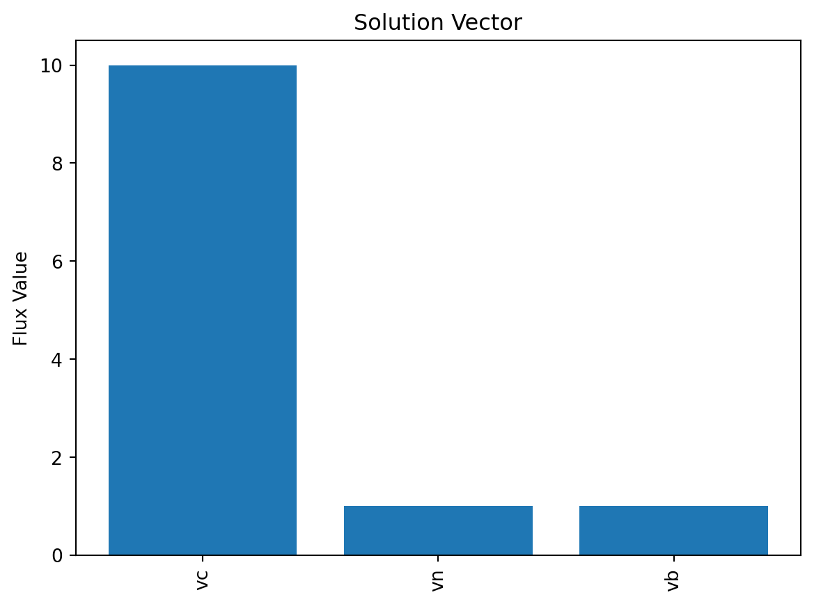
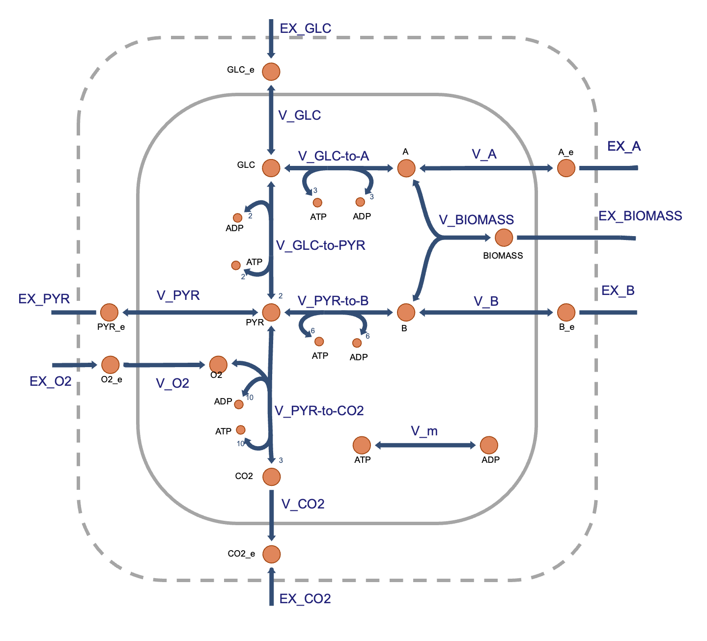
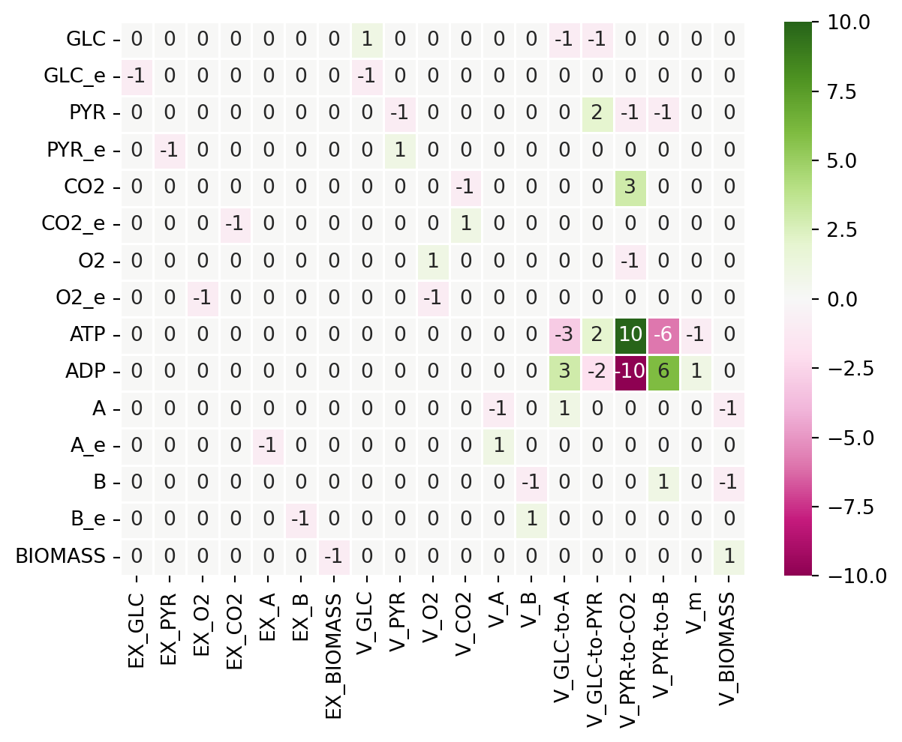
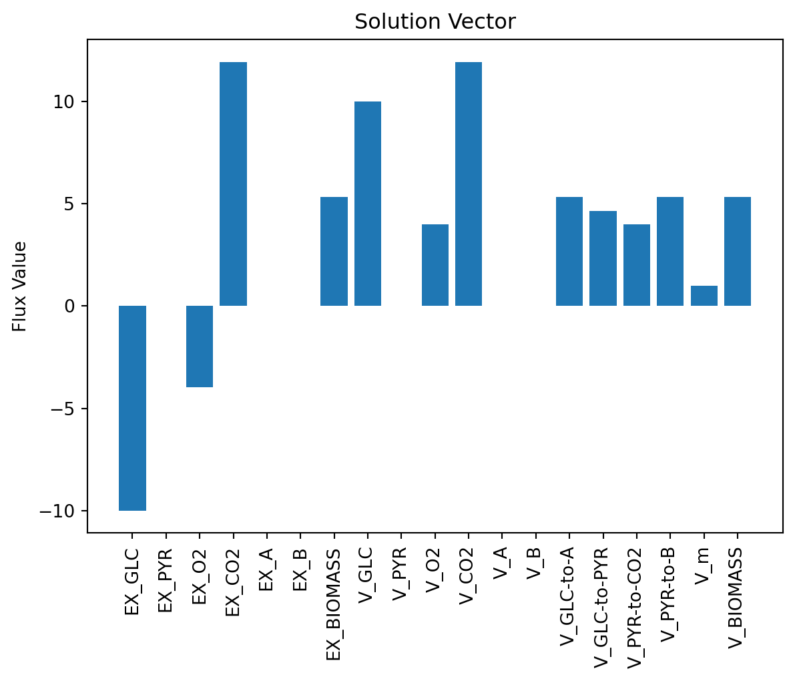

import numpy as np # 数值库
import seaborn as sns # 绘制热图
import matplotlib.pyplot as plt # 绘制图形
from scipy.optimize import linprog # 线性规划函数
from scipy.optimize import linprog_verbose_callback # 线性规划函数
from IPython.display import IFrame # HTML 元素加载器7 学习 FBA
该部分内容源于 (Scott and Segrè 2024) 和 https://github.com/gaospecial/learn-fba。

这些材料旨在以简单但具有生物学意义的方式介绍 FBA。它与 Helen Scott 和 Daniel Segrè 的手稿 海洋生态系统中的代谢通量建模 相关 (Scott and Segrè 2024) 。
主要内容包括：
- FBA 基本假设和标准公式的总结。
- 有用的参考文献和在线资源列表。
- 超简化的化学计量模型示例（只有 3 个反应）。
- 简单但具有生物学意义的代谢网络，无法通过直觉解决，需要借助 FBA 求解。
7.1 使用的库
导入基本数值和图形库以及 scipy 优化库。
7.2 1. FBA 基本公式的总结
考虑一个由 \(n\) 个反应和 \(m\) 个代谢物组成的代谢网络。该网络可以用化学计量矩阵 \(\mathbf{S}\) 表示，其元素 \(S_{ij}\) 表示参与反应 \(j\) 的代谢物 \(i\) 的摩尔数。注意，如果代谢物 \(i\) 是产物，则 \(S_{ij}>0\)；如果代谢物 \(i\) 是反应物，则 \(S_{ij}<0\)。
给定一个通量向量 \(V = (V_1,V_2,...V_n)\)（其单位为 \(mmol\cdot grDW^{-1} \cdot h^{-1}\)），系统的稳态方程可以写为
\[ \mathbf{S}V=0 \]
上述方程定义了通量之间的线性约束。此外，可以为每个通量设置不等式约束（下限 LB 和上限 UB）：
\[ LB_j \leq V_j \leq UB_j \]
在由等式和不等式约束定义的可能状态空间内，可以搜索最大化给定目标函数的状态。目标函数可以通过一组系数定义
\[ c = (c_1,c_2,...,c_n) \]
使得要最大化的目标函数定义为
\[ Z = \sum_{j=1}^{n} c_j V_j = c \cdot V \]
然后 FBA 问题被公式化为：
\[ \begin{align} \max \quad & Z = c \cdot V \\ \text{subject to} \quad & \mathbf{S}V=0 \\ & LB_j \leq V_j \leq UB_j \quad \forall j \end{align} \]
这个优化问题可以使用线性规划 (LP) 解决。
7.3 2. 有用的参考文献和在线资源列表
化学计量建模的早期概念： Papoutsakis ET., Butyric acid bacteria 发酵的方程和计算。Biotechnol Bioeng. 1984 Feb;26(2):174-87. 链接
当前公式的第一篇论文： Varma 和 Palsson, Metabolic Flux Balancing: Basic Concepts, Scientific and Practical Use, Nature Biotech 1994, 链接
一篇有用的教学论文： Rawls 等人，A simplified metabolic network reconstruction to promote understanding and development of flux balance analysis tools, Comput Biol Med. 2019 Feb;105:64-71. 链接
Matlab 的 COBRA 工具箱： Becker 等人，Quantitative prediction of cellular metabolism with constraint-based models: the COBRA Toolbox, Nat Protoc 2007;2(3):727-38. 链接
FBA 的测试和次优空间的探索： Segrè 等人，Analysis of optimality in natural and perturbed metabolic networks, PNAS 2020. 链接
7.4 3. 超简单示例
为了形成对 FBA 数学过程的直观理解，我们将使用一个仅有三个反应的代谢网络的超简单示例。
- \(v_C\): 从环境中导入 1 个碳到细胞中
- \(v_N\): 从环境中导入 1 个氮到细胞中
- \(v_b\)（生物质反应）：结合 10 个碳和 1 个氮以生成一个新的生物质单元，并从细胞中移除。
from IPython.display import Image
Image(filename='./images/carbon-nitrogen-growth.png')

这个超简化的代谢网络让我们能够以图形方式可视化 FBA 过程，因为只有三个反应，每个反应都将是我们图表上的一个轴。下面显示的交互式图表中，\(v_c\) 对应 x 轴，\(v_n\) 对应 y 轴，\(v_b\) 对应 z 轴。
FBA 的第一个关键假设是细胞处于”稳态”，即细胞中的代谢物(碳和氮)的浓度不会改变。要达到稳态，进入某个代谢物的通量必须等于流出该代谢物的通量。你可以使用质量平衡方程来表示这个要求。在我们的例子中，有两个质量平衡方程，一个是碳的平衡，另一个是氮的平衡。每个方程都表明代谢物的摄取通量等于生物量反应通量乘以该代谢物在生物量反应中的化学计量系数。
这些质量平衡方程可以用平面来图形化表示。平面上的任何位置都代表满足该质量平衡方程的反应通量组合。
要在下面的交互式图表中查看这些平面，请确保通过点击方程左侧的圆圈来打开前两个方程。
为了使整个反应网络处于稳态，必须满足所有质量平衡约束。在这个例子中，所有质量平衡约束在两个平面的交线处得到满足，形成一条直线。这意味着这条线上的任何点都是满足稳态约束的可能通量组合。
可行空间线在下面的方程 3 中以紫色绘制。
为了缩小这个可行空间，我们可以设置反应通量的边界，使得数值被限制在由上限和下限定义的窗口内。对于我们的例子，我们知道碳摄取反应(\(v_c\))必须在 0 到 10 之间。下限 0 表示反应不能反向流动(释放碳)。上限 10 可能表明环境中只有 10 mmol 的碳，或者碳的转运蛋白每单位时间只能输入这么多。我们可以使用这些不等式来缩短我们的可行空间到一个线段，但它仍可能包含许多可能的解。
\(v_c\) 的边界在下面的方程 4 的不等式中显示，该不等式绘制了 \(v_c\) 值有效的矩形空间。
要找到新的较小的可行空间，需要绘制矩形空间与两个稳态平面的交集。在这里你可以想象，切掉可行空间。
为了在这个新的较小可行空间内选择单一解，我们还需要对细胞做第二个假设 - 即细胞的代谢有某种目标。最常见的是，我们假设细胞会最大化其生长，但它也可能最大化高价值代谢物(如 ATP)的产生，或者可能最小化其能量使用。就我们的简单细胞而言，我们可以说细胞的目标是尽可能多地生长，或最大化生物量反应的通量。所以我们必须找到可行空间中 \(v_b\) 值最高的点。在我们受约束的可行空间中，\(v_b\) 的最高通量是 1，这在 \(v_c\) 等于 10 且 \(v_n\) 等于 1 时达到。
from IPython.display import IFrame
# @title
# Display interactive graph of FBA constraints and solution
# Note: May need to change width/height settings for best display on different monitors
# To interact with the graph on the desmos website, follow the link in the following line of code
IFrame(src="https://www.desmos.com/3d/a080fb997e", width=700, height=375)7.5 定义反应网络
定义反应网络，即化学计量矩阵和代谢物及反应的标签。
# Labels of reactions
reacs = ['vc', 'vn', 'vb']
# Labels of the metabolites
metabs = ['c', 'n']
# 定义化学计量矩阵
# 每一列对应 `reacs` 中出现顺序的反应
# 每一行对应 `metabs` 中出现顺序的代谢物
S = np.array([[ 1., 0., -10.],
[ 0., 1., -1]])# Visualize the S Matrix
colormap = sns.color_palette("Greens")
sns.heatmap(S, annot=True, linewidths=.5, xticklabels=reacs, yticklabels=metabs, cmap="PiYG")
plt.yticks(rotation=0)
plt.show()

7.6 定义优化参数
定义优化参数，即通量下界（LB）和上界（UB），以及目标函数。
# Get the number of reactions and metabolites
m = len(metabs)
n = len(reacs)
b=np.zeros(m) # Right-hand side of SV=0
LARGE = 1000 # Large number to be used as "Infinite" for flux bounds
LB = np.zeros(n) # Set of lower bounds, initialize to zero # FIXME: Change to np.zeros
UB = LARGE*np.ones(n) # Set of upper bounds, initialize to LARGE
# Change flow through individual reaction
UB[reacs.index('vc')] = 10
LBUB = np.transpose(np.stack((LB,UB), axis=0)) # Combine LB, UB into set of pairs [LB,UB]
obj = np.zeros(n) # Initialize Objective function vector to zero
obj[reacs.index('vb')] = -1 # Define objective function. Default of optimizer is "minimize", so a -1 will lead to maximization7.7 运行 LP 求解 FBA
Perform Linear Programming (LP) calculation to solve FBA
options = {"disp": False}
# Call linprog function to solve LP problem
solution = linprog(c=obj, A_eq=S, b_eq=b, bounds=LBUB, options=options) # max c*v, given Sv=b, LB < v SV=0
print("Optimization status (0:successful; 1:Iteration limit reached; 2:Infeasible; 3:Unbounded; 4:Numerical difficulties): ",solution.status)
print("Optimal value: ",solution.fun)
print("Solution vector: ", solution.x)Optimization status (0:successful; 1:Iteration limit reached; 2:Infeasible; 3:Unbounded; 4:Numerical difficulties): 0
Optimal value: -1.0
Solution vector: [10. 1. 1.]7.8 显示解
可视化解向量
v_pos = np.arange(n)
plt.bar(v_pos, solution.x, align='center')
plt.xticks(v_pos, reacs, rotation='vertical')
plt.ylabel('Flux Value')
plt.title('Solution Vector')
plt.show()

7.9 4. FBA from scratch, slightly less trivial example
这是一个稍微更现实的网络，捕捉了一些真实核心代谢网络的关键特征，包括能量生成（发酵和呼吸）、生物量生产以及非生长相关的维护。（模型由 Daniel Segrè 为教学目的而制作）
Image(filename='./images/metabolic-teaching-model.png')

7.10 定义反应网络
# Define the reaction IDs
reacs = ['EX_GLC', 'EX_PYR', 'EX_O2', 'EX_CO2', 'EX_A', 'EX_B', 'EX_BIOMASS',
'V_GLC', 'V_PYR', 'V_O2', 'V_CO2', 'V_A', 'V_B', 'V_GLC-to-A',
'V_GLC-to-PYR', 'V_PYR-to-CO2', 'V_PYR-to-B', 'V_m', 'V_BIOMASS']
# Define the metabolite names
metabs = ['GLC', 'GLC_e', 'PYR', 'PYR_e', 'CO2', 'CO2_e', 'O2', 'O2_e', 'ATP',
'ADP', 'A', 'A_e', 'B', 'B_e', 'BIOMASS']
# Define the stoichiometric matrix
# Each column corresponds to the reactions in the order they appear in `reacs`
# and each row correspond to the metabolites in the order they appear in `metabs`
S = np.array([[ 0., 0., 0., 0., 0., 0., 0., 1., 0., 0., 0., 0., 0., -1., -1., 0., 0., 0., 0.],
[ -1., 0., 0., 0., 0., 0., 0., -1., 0., 0., 0., 0., 0., 0., 0., 0., 0., 0., 0.],
[ 0., 0., 0., 0., 0., 0., 0., 0., -1., 0., 0., 0., 0., 0., 2., -1., -1., 0., 0.],
[ 0., -1., 0., 0., 0., 0., 0., 0., 1., 0., 0., 0., 0., 0., 0., 0., 0., 0., 0.],
[ 0., 0., 0., 0., 0., 0., 0., 0., 0., 0., -1., 0., 0., 0., 0., 3., 0., 0., 0.],
[ 0., 0., 0., -1., 0., 0., 0., 0., 0., 0., 1., 0., 0., 0., 0., 0., 0., 0., 0.],
[ 0., 0., 0., 0., 0., 0., 0., 0., 0., 1., 0., 0., 0., 0., 0., -1., 0., 0., 0.],
[ 0., 0., -1., 0., 0., 0., 0., 0., 0., -1., 0., 0., 0., 0., 0., 0., 0., 0., 0.],
[ 0., 0., 0., 0., 0., 0., 0., 0., 0., 0., 0., 0., 0., -3., 2., 10., -6., -1., 0.],
[ 0., 0., 0., 0., 0., 0., 0., 0., 0., 0., 0., 0., 0., 3., -2., -10., 6., 1., 0.],
[ 0., 0., 0., 0., 0., 0., 0., 0., 0., 0., 0., -1., 0., 1., 0., 0., 0., 0., -1.],
[ 0., 0., 0., 0., -1., 0., 0., 0., 0., 0., 0., 1., 0., 0., 0., 0., 0., 0., 0.],
[ 0., 0., 0., 0., 0., 0., 0., 0., 0., 0., 0., 0., -1., 0., 0., 0., 1., 0., -1.],
[ 0., 0., 0., 0., 0., -1., 0., 0., 0., 0., 0., 0., 1., 0., 0., 0., 0., 0., 0.],
[ 0., 0., 0., 0., 0., 0., -1., 0., 0., 0., 0., 0., 0., 0., 0., 0., 0., 0., 1.]])
# Note that in this model (as is the convention) exchange reactions are defined
# with the substrate being eschanges as a reactant in the reaction, and
# with nothing as the product, i.e.
# glucose <=>
# This means that for the metabolite to enter the extracellular space, the flux
# of the reaction is negative, and a more negative flux means that more of the
# metabolite is entering the space. The lower bound of the reaction sets the
# minimum flux of the reaction (and thus the maxiumum flux of the metabolite
# entering the extracellular space).# Visualize the S Matrix
colormap = sns.color_palette("Greens")
sns.heatmap(S, annot=True, linewidths=.5, xticklabels=reacs,yticklabels=metabs,cmap="PiYG")
plt.yticks(rotation=0)
plt.show()

7.11 定义优化参数
# Get the number of reactions and metabolites
m = len(metabs)
n = len(reacs)
b=np.zeros(m) # Right-hand side of SV=0
# Define the lower and upper bounds
LARGE = 1000 # Large number to be used as "Infinite" for flux bounds
LB = np.zeros(n) # Set of lower bounds, initialize to zero
UB = LARGE*np.ones(n) # Set of upper bounds, initialize to LARGE
# Change the bounds for specific reactions
LB[reacs.index('EX_GLC')] = -10 # Reflects glucose limitation in the environment
LB[reacs.index('EX_O2')] = -20 # Reflects a typical maximum oxygen import flux in aerobic conditions
LB[reacs.index('V_m')] = 1 # Reflects ATP requirements to maintain the cell
# Combine LB, UB into set of pairs [LB,UB]
LBUB = np.transpose(np.stack((LB,UB), axis=0))
# Initialize Objective function vector to all zeros
obj = np.zeros(n)
# Change only the coefficient of the biomass reaction
# Default of optimizer is "minimize", so a -1 will lead to maximization
obj[reacs.index('V_BIOMASS')] = -1
# Print the objective function vector
print("Objective function:", obj)Objective function: [ 0. 0. 0. 0. 0. 0. 0. 0. 0. 0. 0. 0. 0. 0. 0. 0. 0. 0.
-1.]7.12 运行 LP 求解 FBA
solution = linprog(c=obj, A_eq=S, b_eq=b, bounds=LBUB, options={"disp": False}) # max c*v, given Sv=b, LB < v
print("Optimization status (0:successful; 1:Iteration limit reached; 2:Infeasible; 3:Unbounded; 4:Numerical difficulties): ",solution.status)
print("Optimal value: ",solution.fun)
print("Solution vector: ", solution.x)Optimization status (0:successful; 1:Iteration limit reached; 2:Infeasible; 3:Unbounded; 4:Numerical difficulties): 0
Optimal value: -5.341463414634147
Solution vector: [-10. -0. -3.97560976 11.92682927 -0.
-0. 5.34146341 10. 0. 3.97560976
11.92682927 0. 0. 5.34146341 4.65853659
3.97560976 5.34146341 1. 5.34146341]7.13 显示解
可视化解向量
v_pos = np.arange(n)
plt.bar(v_pos, solution.x, align='center')
plt.xticks(v_pos, reacs, rotation='vertical')
plt.ylabel('Flux Value')
plt.title('Solution Vector')
plt.show()

# 定义下限和上限
LARGE = 1000 # 用作通量边界的“无限大”数
LB = np.zeros(n) # 下限集合，初始化为零
UB = LARGE*np.ones(n) # 上限集合，初始化为 LARGE
# 更改特定反应的边界
LB[reacs.index('EX_GLC')] = -10 # 反映环境中的葡萄糖限制
LB[reacs.index('EX_O2')] = -20 # 反映有氧条件下的典型最大氧气进口通量
LB[reacs.index('V_m')] = 1 # 反映维持细胞的 ATP 需求
# 将 LB, UB 组合成 [LB,UB] 对的集合
LBUB = np.transpose(np.stack((LB,UB), axis=0))# 初始化目标函数向量为全零
obj = np.zeros(n)
# 仅更改生物量反应的系数
# 优化器的默认设置是“最小化”，因此 -1 将导致最大化
obj[reacs.index('V_BIOMASS')] = -1
# 打印目标函数向量
print("Objective function:", obj)Objective function: [ 0. 0. 0. 0. 0. 0. 0. 0. 0. 0. 0. 0. 0. 0. 0. 0. 0. 0.
-1.]7.14 运行 LP 以解决 FBA
solution = linprog(c=obj, A_eq=S, b_eq=b, bounds=LBUB, options={"disp": False}) # max c*v, given Sv=b, LB < v <UBprint("Optimization status (0: Success; 1: Iteration limit reached; 2: Infeasible; 3: Unbounded; 4: Numerical difficulties): ",solution.status)
print("Optimal value: ",solution.fun)
print("Solution vector: ", solution.x)Optimization status (0: Success; 1: Iteration limit reached; 2: Infeasible; 3: Unbounded; 4: Numerical difficulties): 0
Optimal value: -5.341463414634147
Solution vector: [-10. -0. -3.97560976 11.92682927 -0.
-0. 5.34146341 10. 0. 3.97560976
11.92682927 0. 0. 5.34146341 4.65853659
3.97560976 5.34146341 1. 5.34146341]7.15 显示解
可视化解向量
v_pos = np.arange(n)
plt.bar(v_pos, solution.x, align='center')
plt.xticks(v_pos, reacs, rotation='vertical')
plt.ylabel('Flux Value')
plt.title('Solution Vector')
plt.show()7.16 使用 cobrapy 求解 FBA
在实际应用中，模型、反应、代谢物的操作都是用过 cobrapy 包来完成的。
7.16.1 生成 3 个反应的模型
import cobra
# Make a new model
model = cobra.Model("three_reaction_model")
# Create internal (c compartment) metabolites
c_met = cobra.Metabolite("C_c", name="C", compartment="c")
n_met = cobra.Metabolite("N_c", name="N", compartment="c")
biomass_met = cobra.Metabolite("BIOMASS", name="BIOMASS", compartment="c")
# Create external metabolites (e compartment)
c_met_e = cobra.Metabolite("C_e", name="C_e", compartment="e")
n_met_e = cobra.Metabolite("N_e", name="N_e", compartment="e")
# Add metabolites to model
model.add_metabolites(
[
c_met,
c_met_e,
n_met,
n_met_e,
biomass_met,
]
)
# Add boundary reactions
model.add_boundary(c_met_e, type="exchange", reaction_id="EX_C", lb=-10, ub=0)
model.add_boundary(n_met_e, type="exchange", reaction_id="EX_N", lb=-1000, ub=1000)
model.add_boundary(biomass_met, type="demand", reaction_id="EX_BIOMASS", lb=0, ub=1000)
# Create internal reactions
# Glucose transport
v_c = cobra.Reaction("V_C", name="C uptake", lower_bound=0, upper_bound=10)
v_c.add_metabolites({c_met_e: -1, c_met: 1})
# Nitrogen transport
v_n = cobra.Reaction("V_N", name="N uptake", lower_bound=0, upper_bound=1000)
v_n.add_metabolites({n_met_e: -1, n_met: 1})
# Biomass production
v_biomass = cobra.Reaction("V_BIOMASS", name="Biomass production", lower_bound=0, upper_bound=1000)
v_biomass.add_metabolites({c_met: -10, n_met: -1, biomass_met: 1})
# Add reactions to model
model.add_reactions([v_c, v_n, v_biomass])
# Set the objective
model.objective = v_biomass
# 查看模型
model.summary()
# 求解模型
model.optimize()
model.summary()Set parameter Username
Academic license - for non-commercial use only - expires 2025-04-02Objective
1.0 V_BIOMASS = 1.0
Uptake
| Metabolite | Reaction | Flux | C-Number | C-Flux |
|---|---|---|---|---|
| C_e | EX_C | 10 | 0 | 0.00% |
| N_e | EX_N | 1 | 0 | 0.00% |
Secretion
| Metabolite | Reaction | Flux | C-Number | C-Flux |
|---|---|---|---|---|
| BIOMASS | EX_BIOMASS | -1 | 0 | 0.00% |
可以将模型保存为 SBML 和 JSON 格式。
import os
# Save model
os.makedirs("example/learn-fba/3rxn-model", exist_ok=True)
cobra.io.write_sbml_model(model, "example/learn-fba/3rxn-model/3rxn-model.xml")
cobra.io.save_json_model(model, "example/learn-fba/3rxn-model/3rxn-model.json")7.16.2 生成简单的模型
下面使用 cobra 定义一个真实的简单模型。
这个代谢网络包含一些真实的代谢产物（例如，葡萄糖：GLC 和丙酮酸：PYR）以及一些虚构的代谢产物（A 和 B），旨在代表用于生物质（其通量为增长率）生产的构件（例如，氨基酸）。网络中的一些反应是实际代谢途径的粗粒化表征（例如，V_GLC-to-PYR为糖酵解过程，V_PYR-to-CO2 为柠檬酸循环）。EX_GLC 是交换反应，通过定义和使用交换反应来实现细胞边界处代谢物吸收/分泌的平衡。该反应的方向定义为代谢物的分泌，这意味着代谢物的摄取与负通量相关。V_PYR-to-CO2 反应被突出显示，以例证基因-蛋白质-反应规则。例如，这一虚构的反应可以由蛋白质复合体 X1 和 X2 催化，也可以由单一酶 Y 催化，基因-蛋白质规则将是布尔表达式 (G[X1] AND G[X2]) OR G[Y]，其中 G[P] 是一个布尔变量，指示编码蛋白质P的基因的存在。
import cobra
# Make a new model
model = cobra.Model("segre_minimal_model")
# Create internal (c compartment) metabolites
glc = cobra.Metabolite("GLC", name="GLC", compartment="c")
pyr = cobra.Metabolite("PYR", name="PYR", compartment="c")
co2 = cobra.Metabolite("CO2", name="CO2", compartment="c")
o2 = cobra.Metabolite("O2", name="O2", compartment="c")
atp = cobra.Metabolite("ATP", name="ATP", compartment="c")
adp = cobra.Metabolite("ADP", name="ADP", compartment="c")
met_a = cobra.Metabolite("A", name="A", compartment="c")
met_b = cobra.Metabolite("B", name="B", compartment="c")
met_biomass = cobra.Metabolite("BIOMASS", name="BIOMASS", compartment="c")
# Create external metabolites (e compartment)
glc_e = cobra.Metabolite("GLC_e", name="GLC_e", compartment="e")
pyr_e = cobra.Metabolite("PYR_e", name="PYR_e", compartment="e")
co2_e = cobra.Metabolite("CO2_e", name="CO2_e", compartment="e")
o2_e = cobra.Metabolite("O2_e", name="O2_e", compartment="e")
met_a_e = cobra.Metabolite("A_e", name="A_e", compartment="e")
met_b_e = cobra.Metabolite("B_e", name="B_e", compartment="e")
# Add metabolites to model
model.add_metabolites(
[
glc,
glc_e,
pyr,
pyr_e,
co2,
co2_e,
o2,
o2_e,
atp,
adp,
met_a,
met_a_e,
met_b,
met_b_e,
met_biomass,
]
)
# Add boundary reactions
# TODO: Constrain uptakes
model.add_boundary(glc_e, type="exchange", reaction_id="EX_GLC", lb=-10, ub=1000)
model.add_boundary(pyr_e, type="exchange", reaction_id="EX_PYR", lb=0, ub=1000)
model.add_boundary(o2_e, type="exchange", reaction_id="EX_O2", lb=-1000, ub=1000)
model.add_boundary(co2_e, type="exchange", reaction_id="EX_CO2", lb=-0, ub=1000)
model.add_boundary(met_a_e, type="exchange", reaction_id="EX_A", lb=0, ub=1000)
model.add_boundary(met_b_e, type="exchange", reaction_id="EX_B", lb=0, ub=1000)
model.add_boundary(met_biomass, type="demand", reaction_id="EX_BIOMASS", lb=0, ub=1000)
# Create internal reactions
# Glucose transport
v_glc = cobra.Reaction("V_GLC", name="GLC uptake", lower_bound=0, upper_bound=1000)
v_glc.add_metabolites({glc_e: -1, glc: 1})
# Pyruvate transport
v_pyr = cobra.Reaction("V_PYR", name="PYR release", lower_bound=0, upper_bound=1000)
v_pyr.add_metabolites({pyr: -1, pyr_e: 1})
# Oxygen transport
v_o2 = cobra.Reaction("V_O2", name="O2 uptake", lower_bound=0, upper_bound=1000)
v_o2.add_metabolites({o2_e: -1, o2: 1})
# Carbon dioxide transport
v_co2 = cobra.Reaction("V_CO2", name="CO2 release", lower_bound=0, upper_bound=1000)
v_co2.add_metabolites({co2: -1, co2_e: 1})
# Metabolite A transport
v_a = cobra.Reaction("V_A", name="A release", lower_bound=0, upper_bound=1000)
v_a.add_metabolites({met_a: -1, met_a_e: 1})
# Metabolite B transport
v_b = cobra.Reaction("V_B", name="B release", lower_bound=0, upper_bound=1000)
v_b.add_metabolites({met_b: -1, met_b_e: 1})
# V1 (GLC --> A)
v1 = cobra.Reaction("V_GLC-to-A", name="GLC to A", lower_bound=0, upper_bound=1000)
v1.add_metabolites({glc: -1, met_a: 1, atp: -3, adp: 3})
# V2 (GLC --> PYR)
v2 = cobra.Reaction("V_GLC-to-PYR", name="GLC to PYR", lower_bound=0, upper_bound=1000)
v2.add_metabolites({glc: -1, pyr: 2, atp: 2, adp: -2})
# V3 (PYR --> CO2)
v3 = cobra.Reaction("V_PYR-to-CO2", name="PYR to CO2", lower_bound=0, upper_bound=1000)
v3.add_metabolites({pyr: -1, co2: 3, adp: -10, atp: 10, o2: -1})
# V4 (PYR --> B)
v4 = cobra.Reaction("V_PYR-to-B", name="PYR to B", lower_bound=0, upper_bound=1000)
v4.add_metabolites({pyr: -1, met_b: 1, atp: -6, adp: 6})
# Vm (ATP Maintenance)
vm = cobra.Reaction("V_m", name="ATP Maintenance", lower_bound=1, upper_bound=1000)
vm.add_metabolites({atp: -1, adp: 1})
# Vgro (Growth)
vgro = cobra.Reaction("V_BIOMASS", name="Growth", lower_bound=-1000, upper_bound=1000)
vgro.add_metabolites({met_a: -1, met_b: -1, met_biomass: 1})
# Add reactions to model
model.add_reactions([v_glc, v_pyr, v_o2, v_co2, v_a, v_b, v1, v2, v3, v4, vm, vgro])
# Set the objective
model.objective = vgro
# 查看模型
model.summary()Objective
1.0 V_BIOMASS = 5.341463414634146
Uptake
| Metabolite | Reaction | Flux | C-Number | C-Flux |
|---|---|---|---|---|
| GLC_e | EX_GLC | 10 | 0 | 0.00% |
| O2_e | EX_O2 | 3.976 | 0 | 0.00% |
Secretion
| Metabolite | Reaction | Flux | C-Number | C-Flux |
|---|---|---|---|---|
| BIOMASS | EX_BIOMASS | -5.341 | 0 | 0.00% |
| CO2_e | EX_CO2 | -11.93 | 0 | 0.00% |
7.16.3 求解模型
model.optimize()
model.summary()Objective
1.0 V_BIOMASS = 5.341463414634146
Uptake
| Metabolite | Reaction | Flux | C-Number | C-Flux |
|---|---|---|---|---|
| GLC_e | EX_GLC | 10 | 0 | 0.00% |
| O2_e | EX_O2 | 3.976 | 0 | 0.00% |
Secretion
| Metabolite | Reaction | Flux | C-Number | C-Flux |
|---|---|---|---|---|
| BIOMASS | EX_BIOMASS | -5.341 | 0 | 0.00% |
| CO2_e | EX_CO2 | -11.93 | 0 | 0.00% |
7.16.4 保存模型
# Save model
import os
# 创建目录（如果不存在）
os.makedirs("example/learn-fba/minimal-model", exist_ok=True)
cobra.io.write_sbml_model(model, "example/learn-fba/minimal-model/segre_minimal_model.xml")
cobra.io.save_json_model(model, "example/learn-fba/minimal-model/segre_minimal_model.json")